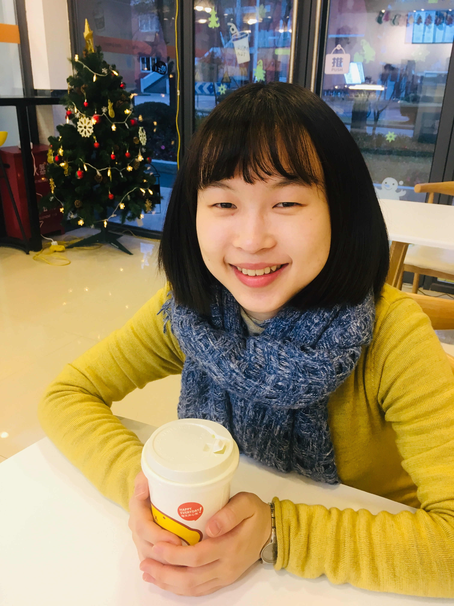
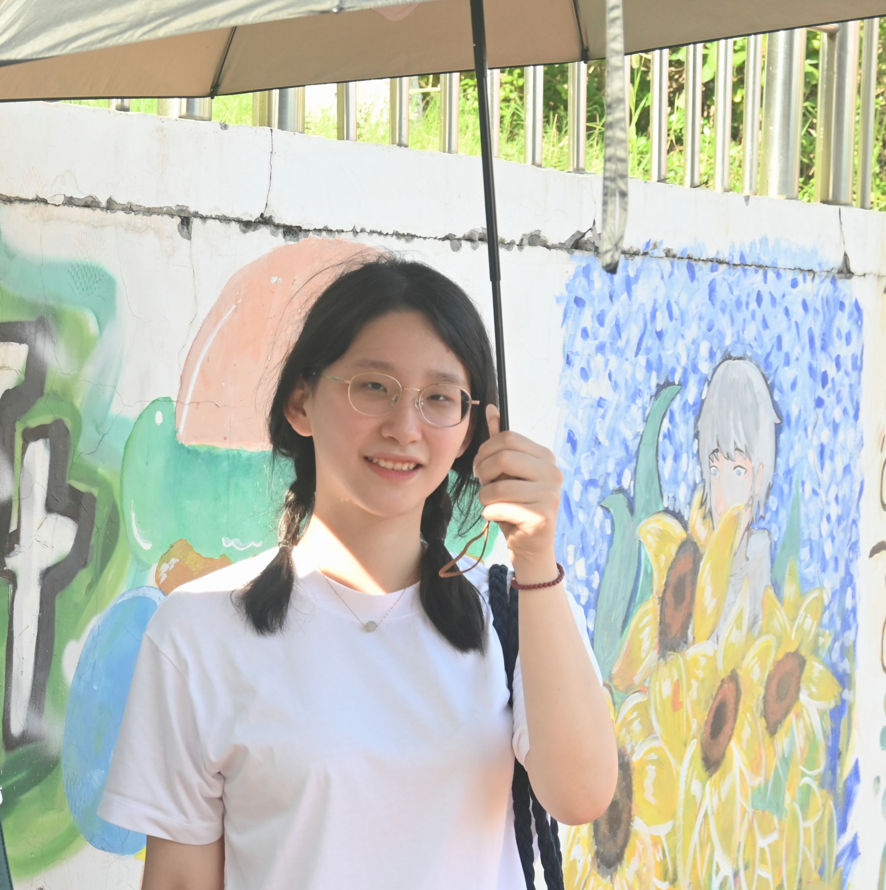
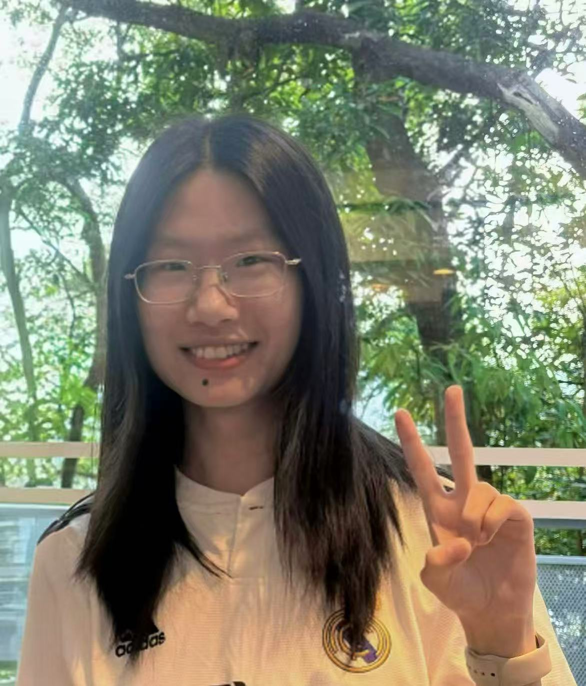

The Experimental Sociolinguistics (ExpSocio) Lab at City University of Hong Kong studies language variation and change at the interface of sociolinguistics and psycholinguistics. We work on a wide range of topics related to the perception and production of sociolinguistic variation, combining corpus and experimental approaches. We ask questions like:

Aini (she/her/hers) is the lab director and an Assistant Professor in the Department of Linguistics and Translation at City University of Hong Kong.

Yi (she/her/hers) is a second-year PhD student in Linguistics. Her research interests lie at the interface of phonetics, sociolinguistics, and psycholinguistics. She is particularly interested in individual differences in the production, perception, processing, and social interpretation of speech sounds.

Zoey (she/her/hers) is a part-time research assistant in the lab with a strong interest in speech perception and processing. Her research specifically explores how listeners perceive and integrate tonal and affective cues in spoken language.
Sean (he/his) is a part-time research assistant in the lab. His research interests include sociolinguistics, intercultural communication, and media communication.
We are actively recruiting students interested in (variationist/quantitative) sociolinguistics, psycholinguistics, and experimental approaches to language variation and change.
Students from diverse backgrounds — linguistics, psychology, cognitive science, and related fields — are warmly welcome. To join as a PhD student or research assistant, please get in touch with Aini: ainili@cityu.edu.hk.
For PhD admission, preference will be given to students with a strong background in quantitative methods and speech data analysis. Students from the Chinese mainland with a strong academic background are encouraged to apply for the Hong Kong PhD Fellowship Scheme (HKPFS). Current junior PhD students at a C9 University in the Chinese mainland are also welcome to join us through the joint PhD program with CityUHK.